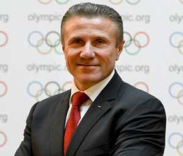
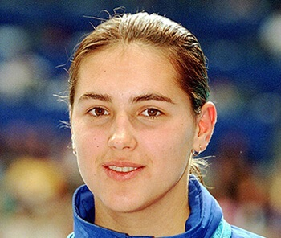
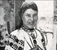

In the history of humanity there have always been people whose actions and
ideas produced a great impact on the lives of other people. That‘s why they are called
outstanding.
Ukraine is also abundant in talents. They have made a great contribution to the
scientific, cultural and social life of our country.
Andriy Shevchenko
Andriy Shevchenko (Андрій Шевченко) is a Ukrainian footballer who plays for Dynamo Kyiv and the Ukraine national team as a striker. He is the third-highest goalscorer in ChamBthe UEFA Champi awarded other individual awards.
Klitschko brothers
Vitali Klitschko (Віталій Кличко), older brother, is the current WBC world heavyweight champion. He has the highest knockout percentage (95%) of any heavyweight boxthe world.
Vasyl Virastyuk
Vasyl Virastyuk (Василь Вірастюк) is a strongman competitor from Ukraine. He competed in the finals of the World's Strongest Man contest in 2003 (3rd place) and 2004 (1st place). As well he won the 2007 IFSA Strongman World Championship.

Sergey Bubka
Andriy Shevchenko (Андрій Шевченко) is a Ukrainian footballer who plays for Dynamo Kyiv and the Ukraine national team as a striker. He is the third-highest goalscorer in Champions League history with 58 goals as of 10 March 2011, behind Ruud van Nistelrooy (60) and Raul (71). Shevchenko is ranked as the third top goalscorer in all European competitions with 67 goals. The most prestigious of Andriy’s awards were the Ballon d'Or in 2004 (becoming the third Ukrainian, after Oleg Blokhin and Igor Belanov to receive it) and the UEFA Champions League in 2003 with Milan. Besides the Golden Ball, Shevchenko was awarded other individual awards.

Yana Klochkova
Vitali Klitschko (Віталій Кличко), older brother, is the current WBC world heavyweight champion. He has the highest knockout percentage (95%) of any heavyweight boxing champion in overall fights. He also holds the distinction of being a three time world heavyweight champion, having previously held the WBO and WBC titles, and has never been knocked out or knocked down in any professional boxing bout. Vitali is the first professional boxing world champion to hold a Ph.D. (in sports science). His younger brother, Wladimir Klitschko (Володимир Кличко), is a Ukrainian heavyweight boxer. Klitschko is the unified IBF, WBO, IBO and Ring Magazine Champion of the world.

Maria Pryimachenko
Vasyl Virastyuk (Василь Вірастюк) is a strongman competitor from Ukraine. He competed in the finals of the World's Strongest Man contest in 2003 (3rd place) and 2004 (1st place). As well he won the 2007 IFSA Strongman World Championship.